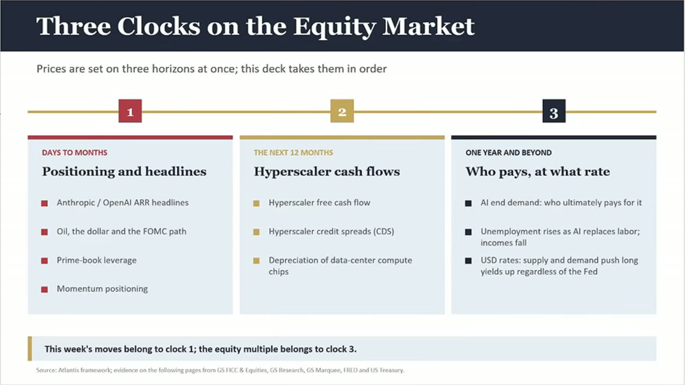
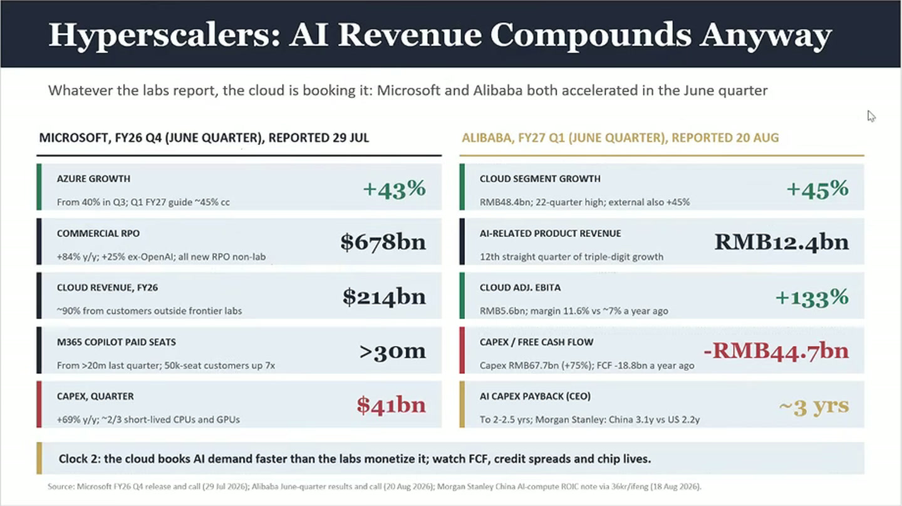
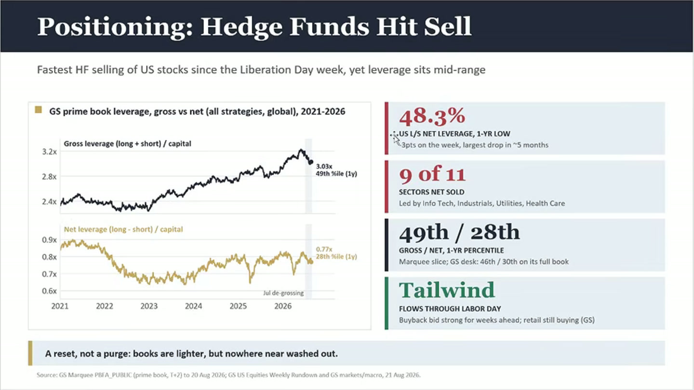
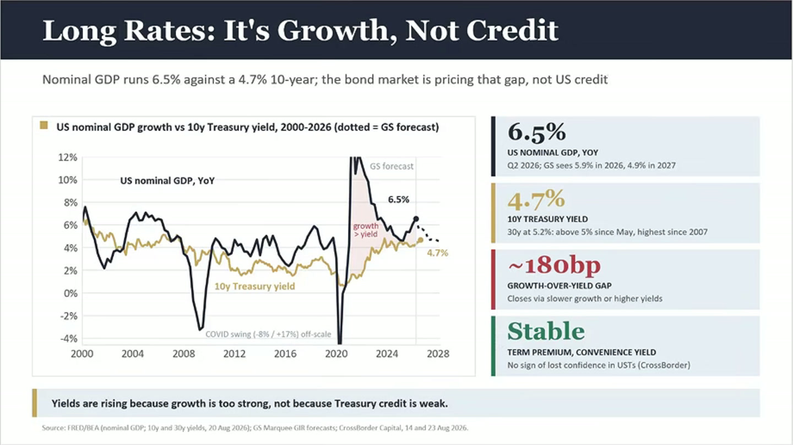
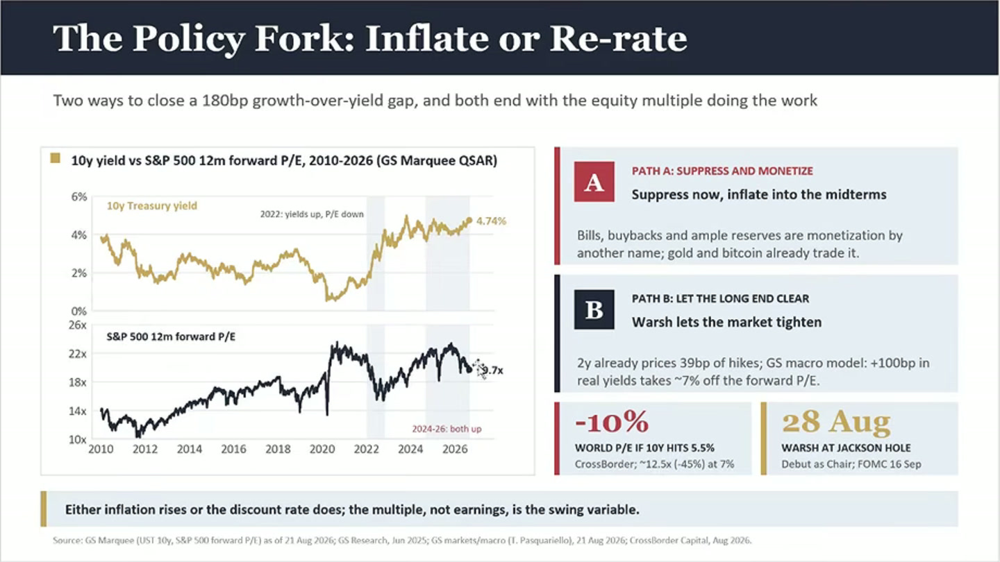
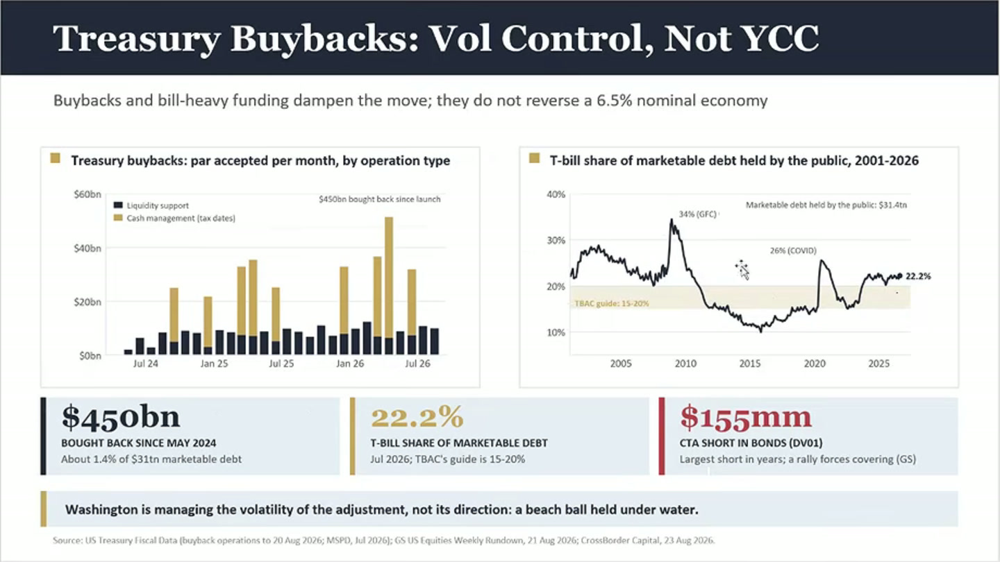

Positioning and headlines
- Anthropic / OpenAI ARR headlines
- OI、美元和 FOMC 路径
- Prime-book leverage
- Momentum positioning
把一场中文市场周会，整理成一份可以快速复盘的阅读版。deck 的主线是 Three Clocks on the Equity Market：先看仓位，再看 hyperscaler 的现金流，最后看谁在什么利率下为 AI 和增长买单。
ocr/。字段契约 ↗Agent 主输入是 JSONL 和逐页图片；当前页面只是阅读入口。自动转录和 OCR 可能误识别专名、数字与标签。
演讲先承认 AI ARR、自由现金流和利率都可能成为压力来源，但认为市场正在重复 6 月已经讲过的悲观叙事。由于仓位和杠杆不像 6、7 月末那么拥挤，短期更像 reset，而不是全面踩踏。
中期需要把“AI 需求”从 labs 的 ARR 新闻，转成 Microsoft、Alibaba 等云厂商的收入、订单、资本开支回报和信用条件。长期真正决定 equity multiple 的，是名义增长与 10 年期利率之间的关系。
视频最后留下的监测框架可以压缩成三个问题：① 仓位是否重新拥挤；② 云厂商现金流是否恶化；③ 10Y 利率上行究竟来自更强增长，还是来自更高的风险溢价。

阅读提示：本周的价格波动属于第 1 只钟，估值倍数的压力属于第 3 只钟。不要用一条新闻解释所有时间尺度。
演讲者结束数周休假后，先描述市场情绪已经明显转空，再指出目前的悲观叙事和 6 月时讨论的内容差别不大。基调不是否认风险，而是反对把旧风险包装成全新的崩盘证据。
音频短摘录“现在所有人都在看空。”
关键词：市场情绪、旧叙事、风险重定价
音频把 Anthropic 的 ARR 新闻放在第一个压力点：新披露或流传的数字低于此前市场预期，因此让市场失望。但演讲同时强调，动量资金并没有像 5、6 月那样大规模外流，整体杠杆也没有处于最拥挤的位置。
关键词：Anthropic ARR、Momentum、杠杆、forced selling
演讲把 labs 与云厂商拆开看：模型公司可能面对 ARR 增速和自由现金流压力，但 Microsoft、Alibaba 这类拥有云、分发、安全和企业客户的公司，可能更早把 AI 需求记入订单和收入。AI 的企业场景也不只限于 coding，库存、销售、税务、运营等流程都可能成为部署入口。
音频短摘录“AI 不是拿来做编程的。”
关键词：hyperscaler、cloud booking、enterprise deployment、AI end demand
讨论转向 Goldman Sachs prime book 和 momentum positioning。演讲者的解读是：gross leverage 仍不低，但 net exposure 已经下降，部分板块出现净卖出；这说明书本变轻，却还没有达到全面出清的状态。短期下跌风险因此更像仓位调整，而不是必须通过清算完成的崩溃。
关键词：gross leverage、net leverage、9/11 sectors、software momentum
演讲者承认市场担心 10 年期利率过高是有意义的，但把当前利率压力更多解释为增长与收益率之间的重新定价，而不是美国国债信用突然失效。deck 用约 6.5% 的名义 GDP 增长、约 4.7% 的 10Y 收益率和约 180bp 的 gap 来表达这套框架。音频还把 GS FCI 作为更直接的流动性观察，认为 7 月之后流动性并没有同步恶化。
关键词：US nominal GDP、10Y Treasury、growth-over-yield gap、term premium
如果增长与收益率之间的 gap 要收窄，演讲给出的两条路径是：名义增长和通胀继续上行，或者长端收益率清算并抬高折现率。两条路径的共同结果是估值倍数承担调整，而不是先假设盈利立刻崩掉。deck 以 10Y 到 5.5% 时 forward P/E 约下修 10% 的情景作示意，属于视频中的模型假设。
关键词：policy fork、inflation、discount rate、forward P/E、Jackson Hole
最后一段把 Treasury buybacks 和 bill-heavy funding 放进利率框架：它们可以压低调整过程中的波动，却不能逆转一个名义增长较强的经济。结尾回到联储空间有限、市场恐慌可能反复，以及观众提问。
关键词：Treasury buybacks、T-bills、波动控制、FOMC、Q&A
以上是音频的结构化意译。完整自动识别片段保存在 transcript.jsonl；英文缩写、公司名和数值可能存在识别误差。
原始自动语音识别结果已单独保存为 JSONL，每行一个片段，包含稳定 ID、起止秒数、文字、章节和识别来源。agent 应优先读取该文件，而不是解析本页摘要。
逐页图像、OCR、视觉类型和摘要已统一写入 deck.jsonl ↗。HTML 使用同一套 PNG 视觉证据。





| 视频中的数字 | 在论证中扮演的角色 | 阅读边界 |
|---|---|---|
| Azure +43%；Alibaba cloud +45% | 用云端收入/订单证明 AI 需求可能先在 hyperscaler 端兑现。 | 是 deck 画面中的公司季度指标，页面未独立核对财报口径。 |
| 48.3%；9/11；49th / 28th | 用净杠杆、净卖出行业数量和分位数说明仓位已变轻。 | 指标定义、观察窗口和数据日期需回到图表来源确认。 |
| 6.5%；4.7%；约 180bp | 把名义增长、10Y 收益率和增长-收益率 gap 连接到估值倍数。 | 这是视频的宏观框架，不代表本页对 GDP、利率或 term premium 作实时认证。 |
| 10Y 5.5% → forward P/E 约 -10% | 作为政策分叉下的估值敏感性示意。 | 属于情景假设，不是交易目标、价格预测或保证。 |
来源：YouTube · 市场概述2026年8月25日，频道 Shanghao Jin，视频时长约 31:08。页面使用公开视频播放器的 deck 画面；本次按时间点重新打开视频并截取 720p 播放画面，再裁成 1440×810 的 slide-only 图片，以提升文字清晰度。它仍不是原始 PPT 导出。
字幕轨道不可用，因此下载音频并用本地 Whisper small 模型生成 771 个中文时间戳片段。原始片段保存在 transcript.jsonl，页面正文是按主题整理的摘要，不覆盖原始识别结果。
这不是投资建议、实时行情终端、财报核验报告或交易信号。视频中的 TradingView/市场数据、公司指标、宏观数字和模型情景都需要在使用前回到原始数据源；页面也没有把 deck mockup 当成 PineScript 已实现的证据。
优先核对：Anthropic ARR 的具体口径与日期、Microsoft/Alibaba 财报期间和币种、prime-book leverage 的数据窗口、名义 GDP 与 10Y yield 的时间对齐、Treasury buyback 的统计口径，以及 10Y 5.5% 情景的估值模型。
页面生成日期：2026-08-26。素材和数字以视频发布时的快照为准，可能随原始数据修订而变化。